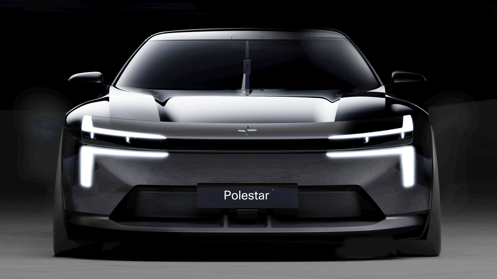

▲ 폴스타가 공개한 '포뮬러 2030' 콘셉트카 티저 이미지. 신임 디자인 총괄 필립 뢰머스의 첫 작품이다
1. 폴스타, 미래 디자인 예고편을 먼저 꺼냈다
폴스타가 브랜드의 미래 디자인 방향을 담은 콘셉트카 '포뮬러 2030'을 티저 이미지로 공개했다. 이번 공개는 폴스타2·3·4로 이어져 온 기존 양산 라인업 소식이 아니라, 아직 세상에 없는 차세대 디자인 언어를 미리 보여주는 성격의 콘셉트카라는 점에서 지금까지의 폴스타 관련 소식들과는 결이 다르다. 실제 판매될 특정 신차가 아니라, 앞으로 나올 여러 모델에 반영될 '디자인 방향성'을 제시하는 것이 이 콘셉트의 목적이다.
비공개 선공개는 9월 7일(현지시간) 스웨덴 예테보리 본사 내 전시 공간 '더 큐브(The Cube)'에서 투자자, 딜러, 일부 VIP 고객을 대상으로 진행됐다. 일반 대중과 글로벌 미디어를 대상으로 한 정식 공개는 10월 스페인 아스카리에서 열리는 폴스타4 SUV 미디어 드라이브 행사를 통해 이뤄질 예정이다.

▲ 현재 판매 중인 2026년형 폴스타2. 포뮬러 2030 콘셉트의 디자인은 이 차의 후속 모델(2027년 출시 예정)에 반영될 예정이다 ⓒ Polestar
2. 티저 한 장에 담긴 디자인 힌트
공개된 티저 이미지는 낮고 넓은 스탠스, 캠버가 적용된 전륜, 모터스포츠를 연상시키는 세로형 와이퍼 등을 담고 있다. 무엇보다 눈에 띄는 것은 새롭게 해석된 헤드라이트 구조다. 폴스타 특유의 '토르의 망치'식 듀얼 블레이드 주간주행등이 훨씬 큰 규모로 확대됐고, 위아래로 배치돼 실제 헤드램프를 감싸는 형태로 바뀌었다. 여기에 폴스타3에 적용됐던 에어로 브릿지 요소도 함께 통합된 것으로 파악된다.
📍 참고로 알아두면 좋은 것
'듀얼 블레이드 헤드라이트'는 폴스타1부터 이어져 온 브랜드 시그니처 디자인 요소로, 세로로 분리된 두 개의 광원이 헤드램프 좌우에 자리하는 것이 특징이다. 폴스타는 이번 콘셉트에서도 이 요소 자체는 유지하되, 형태와 비중을 대폭 키워 재해석했다.

▲ 포뮬러 2030 콘셉트에 통합된 것으로 파악되는 '에어로 브릿지' 요소는 원래 폴스타3(사진)의 공력 디자인에서 가져온 것이다 ⓒ Polestar
3. 신임 디자인 총괄, 필립 뢰머스의 첫 작품
포뮬러 2030은 2025년 1월 폴스타에 합류한 신임 디자인 총괄 필립 뢰머스가 이끄는 팀의 첫 결과물이다. 뢰머스는 이번 콘셉트에 대해 "완전한 격변보다는 대담한 진화가 필요했다"고 설명하며, 기존 스칸디나비안 디자인 언어의 절제된 비율과 조명 디자인 철학을 계승하면서도 한층 스포티하고 각진 조형 요소를 더했다고 밝혔다. 후면 라이트바 형태나 후측창 유무 같은 기존 특징들 역시 이번 콘셉트를 통해 재해석될 가능성이 거론된다.

▲ 후면 유리창을 없앤 파격적 디자인으로 화제를 모았던 폴스타4. 이번 콘셉트는 이런 기존 폴스타의 디자인 실험들을 계승·재해석하는 성격을 띤다 ⓒ Polestar

▲ 폴스타4의 후면부. 좌우로 이어지는 라이트바와 후측창 생략이 특징이다. 이런 후면 디자인 요소들 역시 이번 콘셉트를 계기로 재해석될 가능성이 거론된다 ⓒ Polestar
4. 폴스타2·폴스타7에 이렇게 반영된다
포뮬러 2030에서 제시된 디자인 요소는 2027년 출시 예정인 신형 폴스타2와 2028년 출시 예정인 콤팩트 SUV 폴스타7에 순차적으로 반영될 계획이다. 즉 이번 티저 이미지 한 장은 단순한 모터쇼용 콘셉트가 아니라, 향후 2~3년간 폴스타 양산 라인업의 얼굴이 어떻게 바뀔지를 예고하는 '디자인 로드맵'에 가깝다.
| 디자인 요소 | 설명 | 반영 예정 모델 |
|---|---|---|
| 듀얼 블레이드 헤드라이트 | 확대된 형태로 헤드램프를 감싸는 구조로 재해석 | 신형 폴스타2(2027년) |
| 에어로 브릿지 | 폴스타3의 공력 요소를 통합 | 폴스타7(2028년) |
| 로우 앤 와이드 스탠스 | 낮고 넓은 차체, 캠버 적용된 전륜 | 차세대 라인업 전반 |
5. 왜 지금 디자인 예고편을 꺼냈나
이번 콘셉트 공개는 폴스타의 중장기 경영 전략인 '2030 전략'의 일환으로 추진됐다. 폴스타는 이를 통해 지속적인 사업 성장과 수익성 확보, 그리고 성능·기술·지속가능성이라는 브랜드 핵심 가치를 강화하겠다는 목표를 밝혔다. 다만 현재 폴스타는 만만치 않은 경영 환경에 놓여 있다. 미국 상무부는 지난 6월 '커넥티드차량 규정(중국·러시아산 소프트웨어 탑재 차량 규제)'을 근거로 폴스타에 2027년형부터 미국 내 신차 판매 승인을 내주지 않기로 하면서, 폴스타는 사실상 미국 시장에서 철수 수순을 밟게 됐다. 이 여파로 2026년 성장률 전망치도 기존 '낮은 두 자릿수'에서 '낮은~중간 한 자릿수'로 하향 조정된 상태다. 이런 상황에서 나온 미래 디자인 예고편인 만큼, 투자자와 딜러를 대상으로 한 이번 선공개는 브랜드의 장기 방향성에 대한 신뢰를 확보하려는 목적도 있는 것으로 풀이된다.
폴스타의 콘셉트카 관련 소식과 향후 공개 일정은 공식 미디어 채널에서 확인할 수 있다. 바로가기

▲ 폴스타2 페이스리프트 모델. 2027년 나올 완전변경 신형 폴스타2에는 포뮬러 2030의 디자인 언어가 본격적으로 반영될 예정이다 ⓒ Polestar
✅ 포뮬러 2030 콘셉트, 이것만은 확인하세요
· 9월 7일(현지시간) 스웨덴 예테보리 본사에서 투자자·딜러 대상 비공개 선공개
· 정식 글로벌 공개는 10월 스페인 아스카리, 폴스타4 미디어 드라이브 행사에서
· 신임 디자인 총괄 필립 뢰머스(2025년 1월 합류)의 첫 결과물
· 디자인은 2027년 신형 폴스타2, 2028년 폴스타7에 순차 반영 예정
· 실제 판매 모델이 아닌 '디자인 방향성'을 제시하는 콘셉트카
6. 정리
포뮬러 2030은 폴스타가 처음으로 공개한 차세대 디자인 예고편이다. 신임 디자인 총괄 필립 뢰머스는 '혁명보다 진화'를 표방하며 듀얼 블레이드 헤드라이트 같은 기존 정체성은 유지하되, 한층 낮고 넓어진 스탠스와 확대된 조명 디자인으로 새로운 방향을 제시했다. 이 디자인은 2027년 신형 폴스타2와 2028년 폴스타7에 순차적으로 반영될 예정이며, 정식 공개는 10월 스페인에서 열리는 폴스타4 미디어 행사를 통해 이뤄진다.